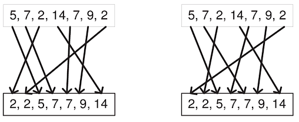

• Τι είναι αλγόριθμος και τι αλγόριθμος ταξινόμησης;

- Ένας αλγόριθμος είναι μια συγκεκριμένη διαδικασία για την επίλυση ενός καλά καθορισμένου υπολογιστικού προβλήματος. Η ανάπτυξη και η ανάλυση των αλγορίθμων είναι θεμελιώδους σημασίας για όλες τις πτυχές της επιστήμης των υπολογιστών: τεχνητή νοημοσύνη, βάσεις δεδομένων, γραφικά, δικτύωση, λειτουργικά συστήματα, ασφάλεια κ.ο.κ
Συνήθως τα δεδομένα αυτά είναι της μορφής αριθμών αλλά και γραμμάτων.
Ο αλγόριθμος ταξινόμησης είναι ένας αλγόριθμος που τοποθετεί δεδομένα σε μία συγκεκριμένη σειρά, μέσα σε μία λίστα.
• Γιατί απετούμε αυτοί οι αλγόριθμοι να είναι αποτελεσματικοί;

- Οι αποτελεσματικοί αλγόριθμοι είναι σημαντικοί όταν ασχολούνται με μεγάλες ποσότητες δεδομένων. Κάτι που μεγαλώνει εκθετικά θα μεγαλώσει απίστευτα γρήγορα. Όσο υψηλότερος είναι ο εκθέτης τόσο πιο γρήγορη είναι η ανάπτυξη. Όταν ασχολείστε με δισεκατομμύρια δίσκους, αυτό αρχίζει να έχει σημασία.
Μερικά πολύ απλά παραδείγματα που μπορείς να παρατηρήσεις διαφορές είναι στα:
- Πώς νιώθεις όταν μια ιστοσελίδα χρειάζεται 5-6 δευτερόλεπτα για την φόρτωση αντί για 1-2 δευτερόλεπτα; ή
- Τι θα λέγατε αν οι Χάρτες της Google χρειάστηκαν 20-30 δευτερόλεπτα για να βρουν την καλύτερη διαδρομή αντί για 5-10 δευτερόλεπτα;
• Πως μπορούμε να συγκρίνουμε ποιος αλγόριθμος ταξινόμησης είναι πιο αποτελεσματικός από κάποιον άλλον;
- Αν υποθέσουμε ότι και οι δύο αλγόριθμοι χρησιμοποιούν τα ίδια δεδομένα σαν είσοδο, στην γενική ιδέα οι δύο πιο σημαντικοί παράγοντες είναι ο χρόνος εκτέλεσης, ο χώρος που χρειάζεται ο αλγόριθμος να εκμεταλευτεί για να εκτελεστεί και αν τα δεδομένα που μας δίνουν είναι ταξινομημένα. Όμως στο επίπεδο του μαθήματος μας νοιάζει μόνο ο χρόνος εκτέλεσης και ο τρόπος που μας έχουν δώσει τα δεδομένα.
Για να καταφέρουμε λοιπόν να συγκρίνουμε εύκολα και γρήγορα ποιος αλγόριθμος είναι πιο αποτελεσματικός από άλλους, έχουν ορίσει κάποια μαθηματικά εργαλεία που ονομάζονται notations. Τα πιο χρήσιμα για εμάς, είναι τα: O, Ω, Θ, που προφέρονται Big Oh notation, Omega notation και Theta notation αντίστοιχα. Αυτά τα notations τα σημπληρωνουμε με συνταρτήσεις, πχ O(n2).
Το O(n2) σημαίνει ότι το "το πάνω όριο" αυτού του αλγορίθμου, όπου σε αυτή την περίπτωση είναι το n2, είναι η χειρότερη περίπτωση χρόνου που μπορεί να πάρει αυτός ο αλγόριθμος. Δηλαδή όσο μεγάλη και να είναι η είσοδος που μας δίνουν, δεν θα ξεπερνάει το n2.
Αντοίστοιχα, το Ω δείχνει ποια είναι η καλύτερη περίπτωση που μπορούμε να έχουμε με αυτόν τον αλγόριθμο και το Θ μας δείνχνει και το πάνω και το κάτω όριο.
Από κάτω έχουμε τρεις γραφικές αναπαραστάσεις των τριων notations (Ο ,Ω και Θ αντιστοιχα), και θεωρούμε μια f(n) για να ελέγξουμε σε ποια από τα τρια notations ανήκει:
Όπου,
(α) Ο(f(n)) = { g(n) : υπάρχει c > 0 και n0 τέτοιο ώστε f(n) ≤ c*g(n) για κάθε n > n0. }
(β) Ω(f(n)) ≥ { g(n) : υπάρχει c > 0 και n0 τέτοιο ώστε g(n) ≤ c*f(n) για κάθε n > n0. }
(γ) Θ(f(n)) = { g(n) αν και μόνο αν g(n) = Ο(f(n)) και g(n) = Ω(f(n)) για κάθε > n0. }
• Ποια είναι η σειρά πολυπλοκότητας από την πιο γρήγορη προς την πιο αργή;
- Οι παρακάτω είναι οι πιο συνηθισμένες πολυπλοκότητες που παρατηρούνται μαζί με ένα γράφημα που τις περιέχει όλες μαζί:
O(1) < O(logn) < O(n) < O(nlogn) < O(n2) < O(n3) < O(2n) < O(n!)